Mọi chiến dịch của công ty trên một bảng: loại, đối tượng, kỳ gửi, lần gửi tiếp theo, số đã gửi và lỗi, phản hồi hoặc hủy nhận, người phụ trách, trạng thái.
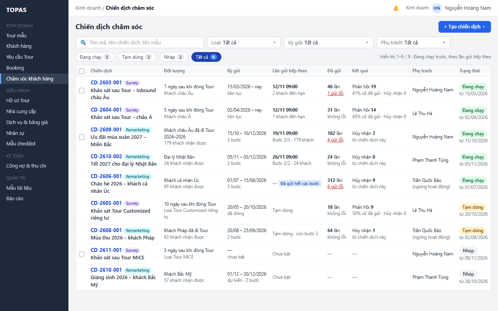
Chip Đang chạy: cột Trạng thái ẩn, sắp theo lần gửi tiếp theo để biết email nào sắp đi ra ngoài.
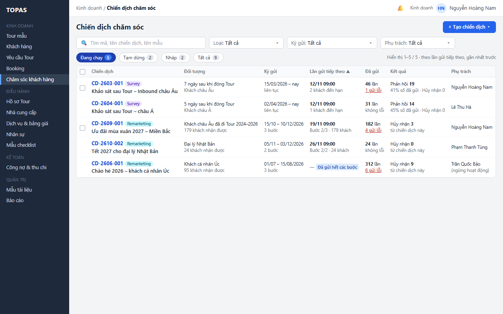
Bộ chọn có khoảng chọn nhanh áp dụng ngay và khoảng ngày gửi tùy chọn; tính cả lần đã gửi và lần đã lên lịch.
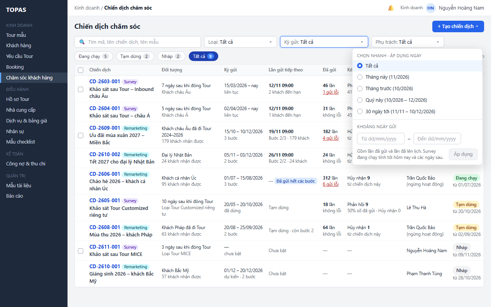
Gom các chiến dịch Remarketing có lần gửi trong tháng này; số trên chip tính theo bộ lọc.
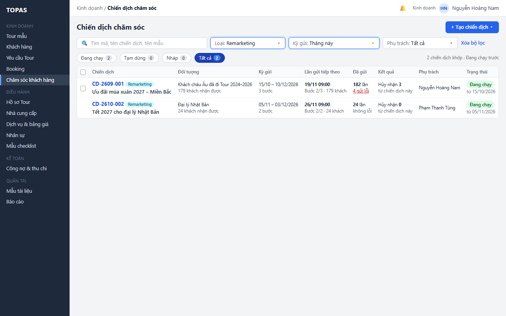
Tìm theo mã, tên chiến dịch hoặc tên mẫu; phần khớp được tô vàng.
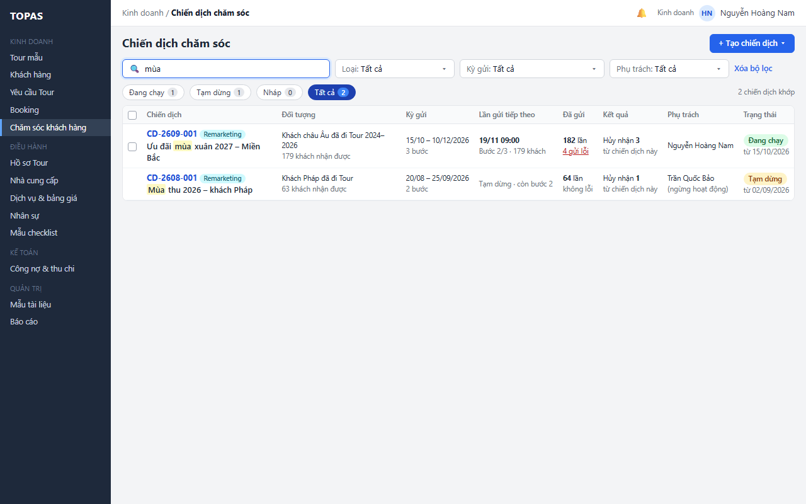
Phân biệt không khớp bộ lọc với chưa có dữ liệu; gợi ý bỏ bớt bộ lọc hoặc tạo chiến dịch.
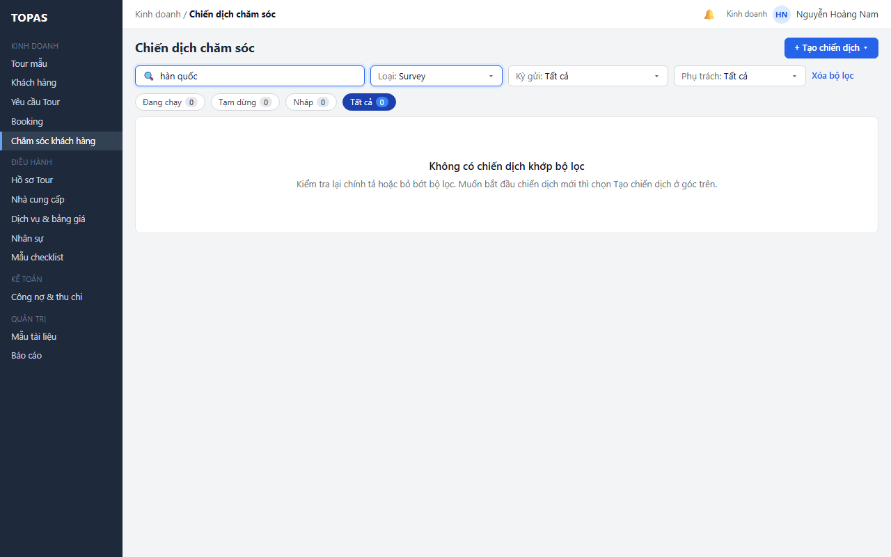
Giữ bộ lọc và cho thử lại khi không tải được dữ liệu; số trên chip hiện “–”.
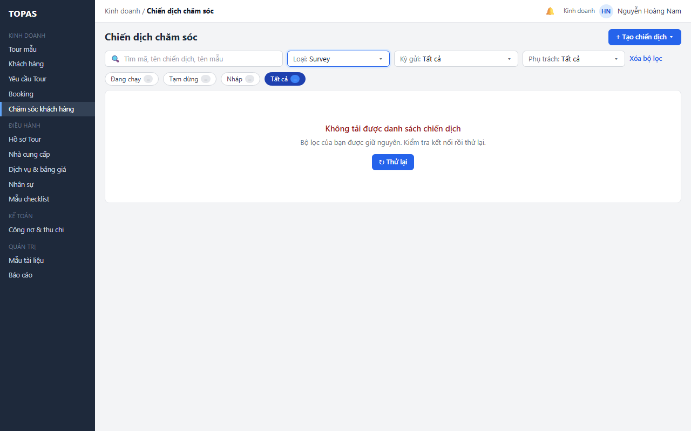
Trạng thái rỗng khi công ty chưa có chiến dịch; giải thích hai loại và chỉ tới nút Tạo chiến dịch.
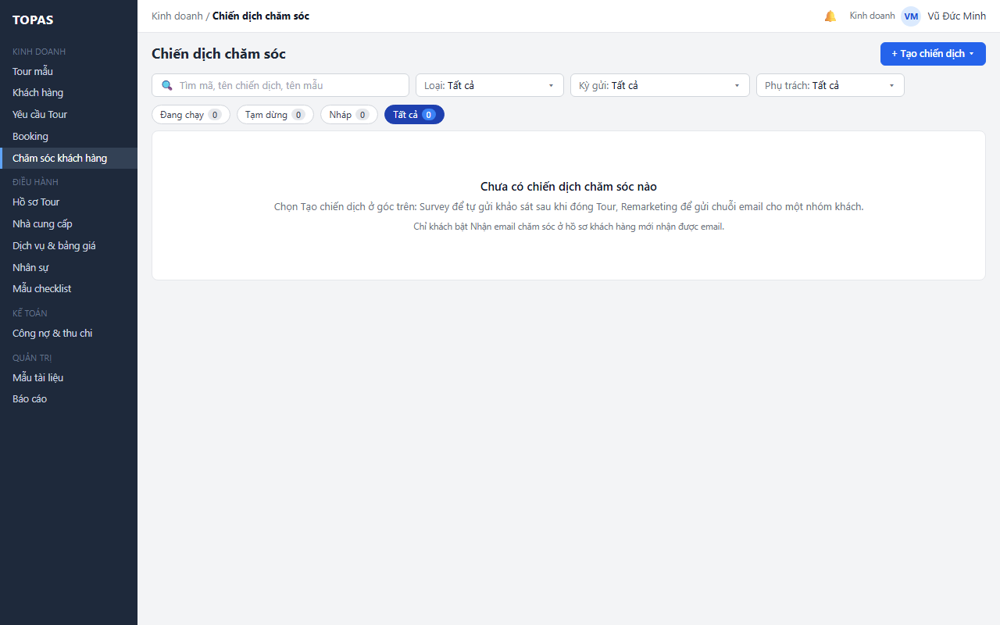
Nút Tạo chiến dịch mở danh sách hai loại kèm mô tả ngắn; chọn loại nào thì mở KD10 tạo mới với loại đó.
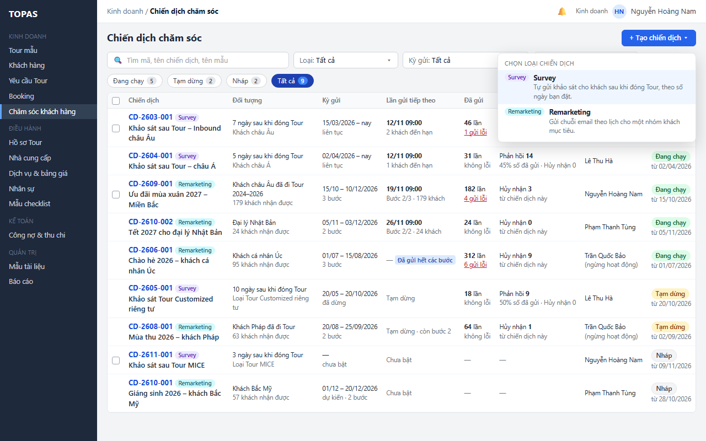
Tạo chiến dịch → Survey mở KD10 ở chế độ tạo mới, loại và người phụ trách điền sẵn. Nội dung đặc tả ở RSD KD10.
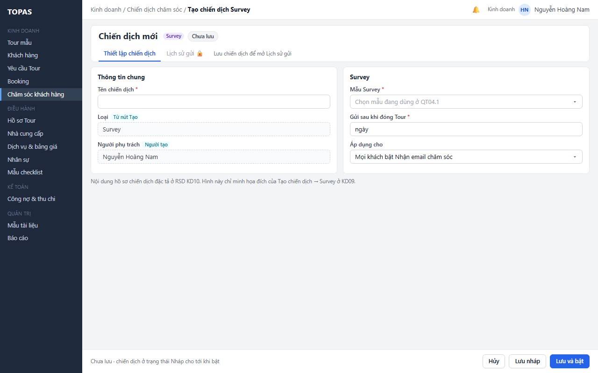
Bấm dòng của chiến dịch đã có lần gửi mở KD10 ở tab Lịch sử gửi. Nội dung đặc tả ở RSD KD10.
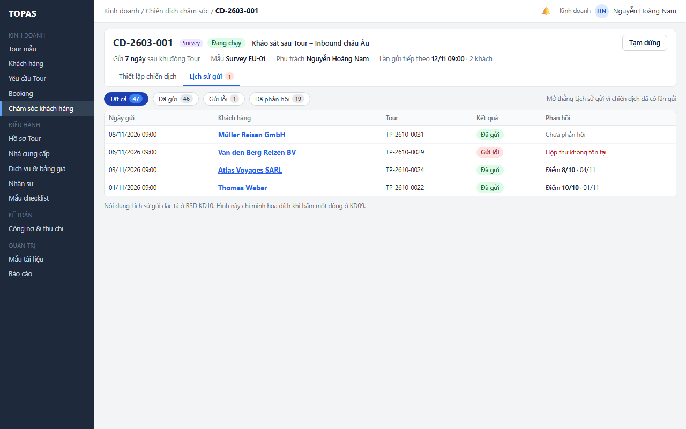
Bộ lọc và vị trí giữ nguyên; chiến dịch vừa tạm dừng ở KD10 mờ tại chỗ vì không còn khớp chip, thông báo có liên kết xem lại.
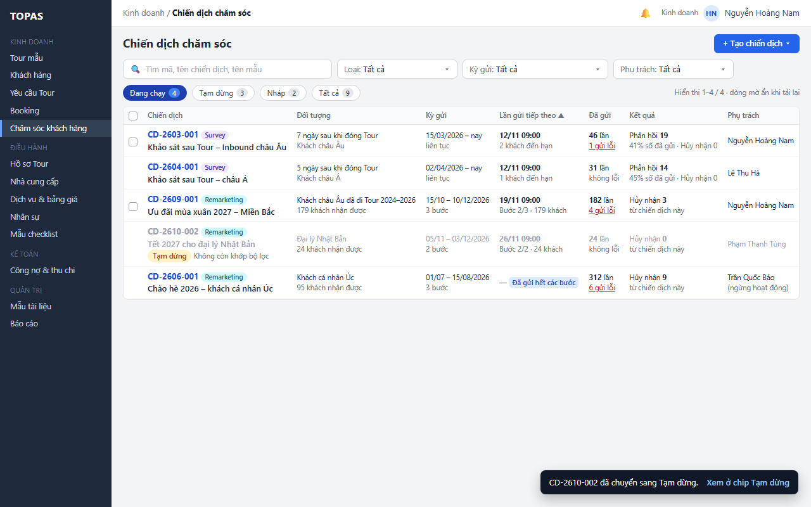
Người phụ trách chọn chiến dịch của mình, chọn người nhận ngay trên thanh hàng loạt; danh sách người nhận có số chiến dịch mỗi người đang phụ trách.
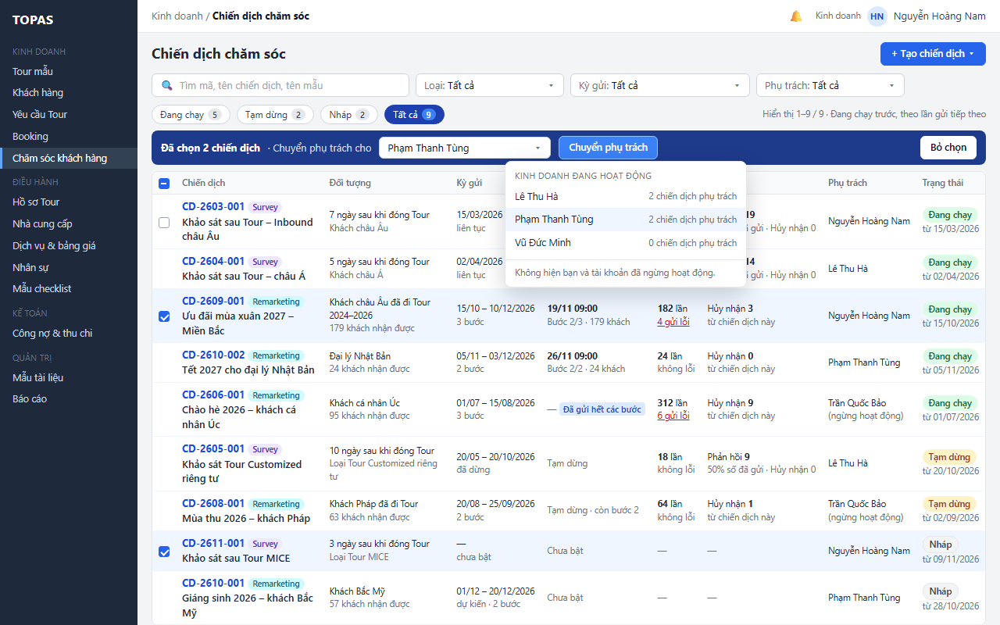
Banner nêu số chiến dịch đã chuyển và người nhận; dòng ghi người phụ trách mới và nhãn Vừa chuyển; lịch gửi không đổi.
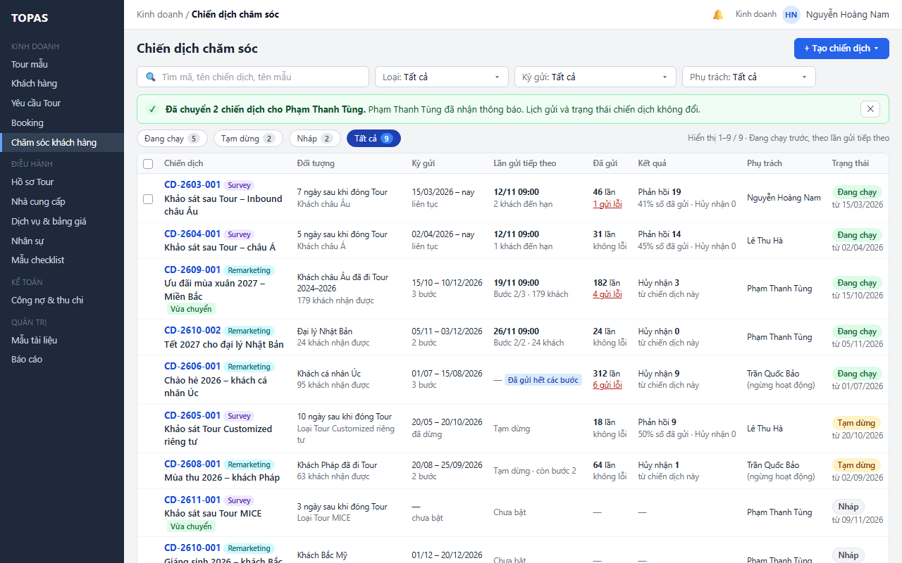
Quản trị lọc theo người phụ trách đã ngừng hoạt động, chọn mọi chiến dịch rồi chuyển một lần.
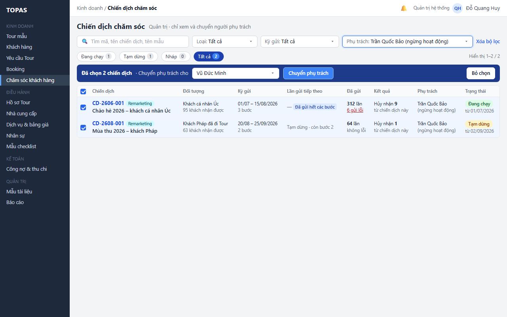
Banner nêu số đã chuyển; dòng đã chuyển mờ tại chỗ vì không còn khớp bộ lọc người phụ trách cũ.
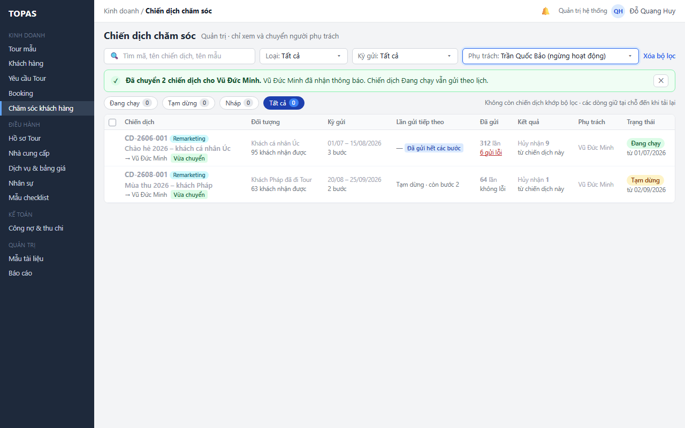